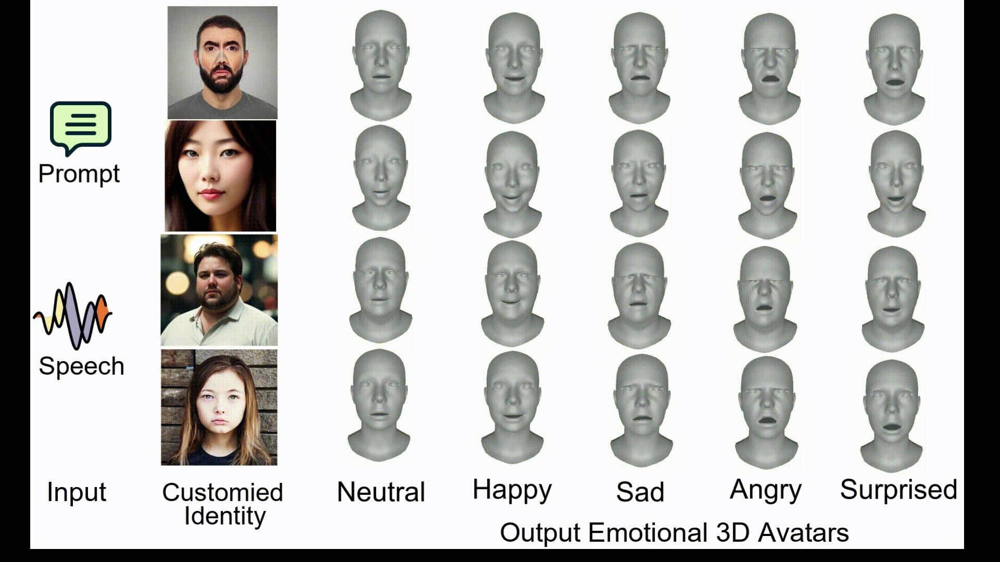
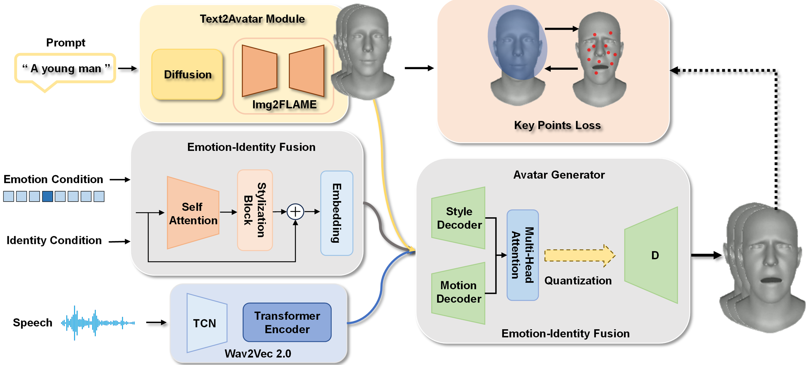
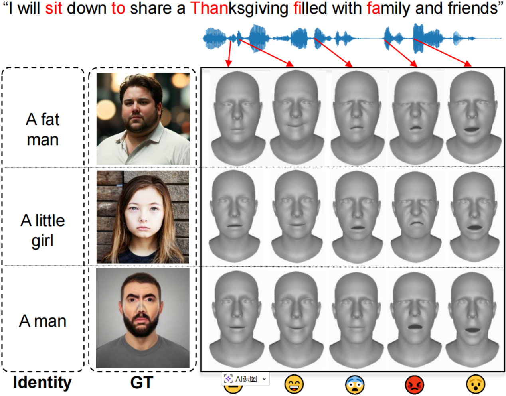
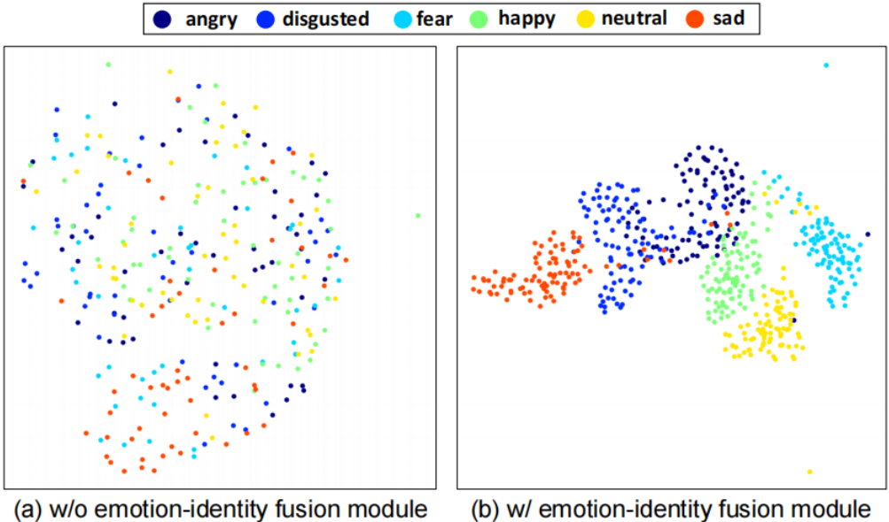
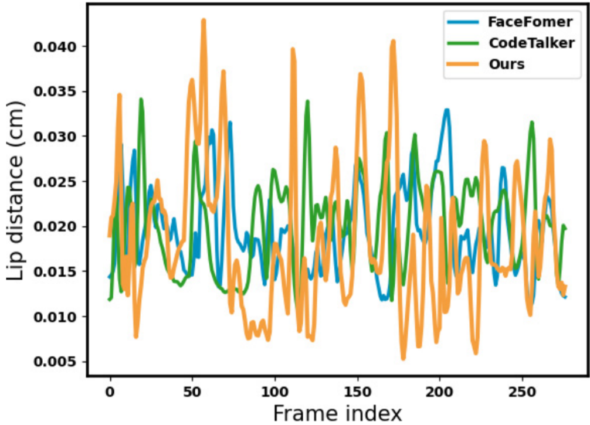
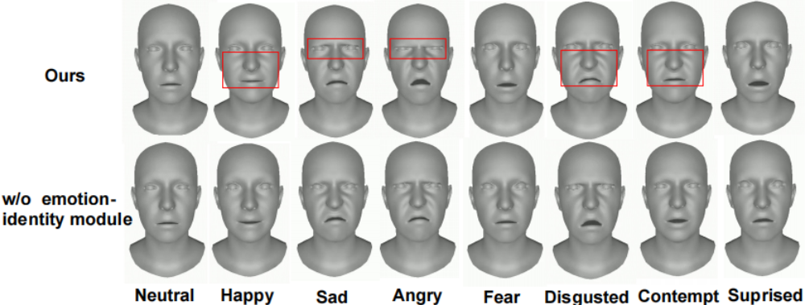

Speech + Identity Prompt + Emotion expressive 3D talking face animation

Speech + Identity Prompt + Emotion expressive 3D talking face animation
Recent advances in speech-driven 3D facial animation have yielded promising results, yet capturing intricate expressiveness, particularly in emotion and identity, remains an intricate challenge. While conventional studies often prioritize lip synchronization, they frequently overlook the full spectrum of emotional nuances and the uniqueness of individual identity.
Addressing this deficiency, we unveil a pioneering method tailored to produce 3D facial expressions that resonate deeply with emotion and identity, guided by speech and user-provided prompt words.
Our key insight is an emotion-identity fusion mechanism, a pre-trained self-reconstruction codebook, meticulously crafted from a wide array of emotional facial movements, serving as an expressive motion benchmark. Using this foundation, prompt words are seamlessly transformed into facial representations that capture both emotion and identity, and are then adeptly projected onto 3D templates.
When synergized with speech audio and a user-specified emotion, our algorithm breathes life into a 3D avatar, reflecting the desired emotion and identity. The model's efficacy is bolstered by an advanced autoregression technique, marrying emotion and identity through an innovative feature fusion mechanism and a purpose-built loss function. Consequently, our approach emerges as a robust tool for crafting 3D talking avatars, rich in emotional depth and distinctive identity.Fig.2 shows the full pipeline: speech is encoded by Wav2Vec2.0, prompt text is converted to a personalized template via Stable Diffusion + Img2FLAME, emotion and identity are fused in temporal features, and the autoregressive generator predicts final 3D facial motion.

Quantitative metrics on reconstructed data: Ours (LME 1.2070 / AVE 1.2528), compared with FaceFormer (1.2071 / 1.2857) and CodeTalker (1.3039 / 1.2637). Ablation also shows clear gains from key-point supervision: LME improves from 1.2931 to 1.2070 and AVE improves from 1.3604 to 1.2528.
User study reports strong preference for our method: +84.6% and +52.4% on facial dynamism against FaceFormer and CodeTalker. Against the model without Lkey, gains are +63.6% (dynamism) and +52.2% (lip-sync quality). Emotion-expression gain is +58.7% versus the model without emotion-identity fusion.




@inproceedings{song2024voicing,
title={Voicing Your Emotion: Integrating Emotion and Identity in Cross-Modal 3D Facial Animations},
author={Song, Wenfeng and Lv, Zhenyu and Wang, Xuan and Hou, Xia},
booktitle={2024 IEEE Conference on Virtual Reality and 3D User Interfaces Abstracts and Workshops (VRW)},
pages={717--718},
year={2024},
organization={IEEE}
}